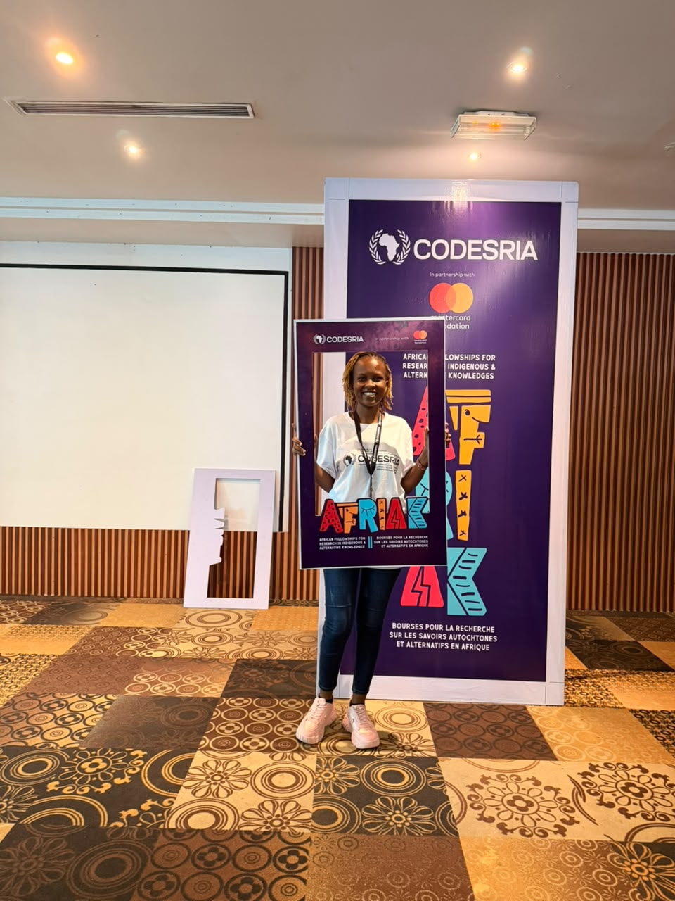

01
Where the fellowship begins
The fellowship brings researchers from across the continent together to share ideas, test methods and build lasting networks. This moment, beside the programme backdrop, marks the start of my engagement with the cohort and the questions we are working on, from water security to inclusive urban development.
